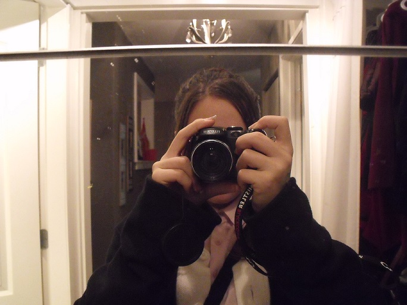

~About Me~
I didn't always have an interest in photography. Being a 14 year old in high school, I'm just learning about myself more and more every day. I started to get into photography because of another passion I have: drawing.
As I began to love drawing the objects that sat in front of me, I wanted to have a reference to that object accessible. I don't prefer drawing pictures over the real thing in front of me but if that's all I have, it'll have to do.
As I started to take photos for references, I began to enjoy taking photos just to take photos. I didn't think, "Oh! This could be a good reference!" It was more like, "Hey, this is kind of cool..".
